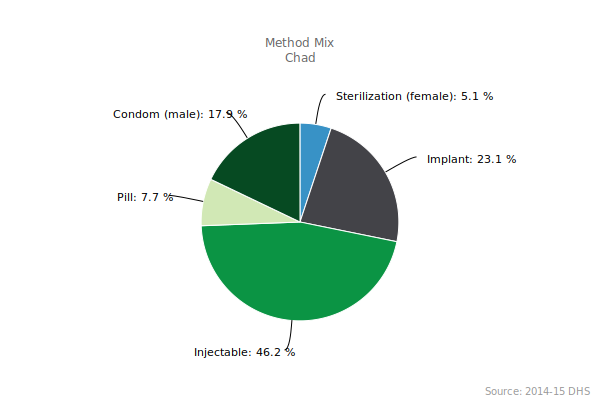
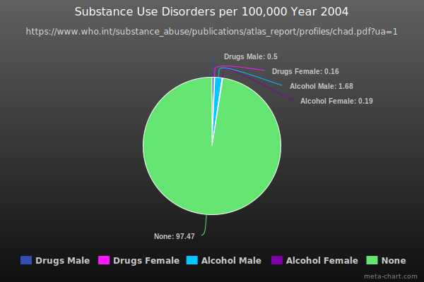

- Area(sq km): 1,284,000
- Area(sq mi): 496,000

Chadian food consists of multiple grains, vegetables, fruits, and meats. Millet and sorghum are some common grains used by Chadians. A Chadian's diet is mostly cereals. The Consumption of animal products and fruit and vegetables, foods rich in micronutrients, is low. The food supply in Chad is barely able to meet the needs of the Chadians. It is not uncommon for households to have food insecurity.


Chadian's enjoy playing baseball. Judo is also popular in Chad. Chad has participated in the Olympic Games but never won.
"Chad is facing challenges of environmental degradation, climate change and population growth, whilst already characterised by low development and high poverty. The Health Cluster is tackling issues such as malnutrition, outbreaks, a high maternal mortality rate, sexual and reproductive health and HIV. The Cluster targets the most vulnerable, including children under five, pregnant and lactating women, and people with disabilities. They are also targeting nomadic people and refugees, who are often unable to access static health services." - World Health Organization
Before August first, 2017 abortion was banned. President Idriss Deby passed a law making abortion legal in cases of sexual assault, rape, incest, or when the pregnancy endangers the mental or physical health or the life of the mother or the fetus.
On the 26th of January 2021, the U.S. Department of State Overseas Security Advisory Council(OSAC) has put in a travel advisory, “Reconsider travel to Chad due to COVID-19, crime, terrorism, and minefields.” Road laws in Chad are not enforced.
Works Cited
Nutrition Country Profiles: Chad Summary, www.fao.org/ag/agn/nutrition/tcd_en.stm.
“Abortion in Chad.” Wikipedia, Wikimedia Foundation, 30 Dec. 2020, en.wikipedia.org/wiki/Abortion_in_Chad.
“Chad.” Encyclopædia Britannica, Encyclopædia Britannica, Inc., www.britannica.com/place/Chad.
“Chad.” Wikipedia, Wikimedia Foundation, 25 Jan. 2021, en.wikipedia.org/wiki/Chad.
“Chad.” World Health Organization, World Health Organization, 22 Oct. 2020, www.who.int/health-cluster/countries/chad/en/.
“Chad Africa.” Africa, www.osac.gov/Country/Chad/Detail.
Ebragim, et al. “Fast Shipment.” International Driver License Translation Services Online, Http://Www.nyszone.com, 12 May 2012, www.adcidl.com/Driving-in-Chad.html#:~:text=The main road traffic rules:&text=The maximum speed limit is,while driving are not permitted.
“Home.” World Health Organization, World Health Organization, who.int/.
Rattan, Jesse, et al. “Rapid Contraceptive Uptake and Changing Method Mix With High Use of Long-Acting Reversible Contraceptives in Crisis-Affected Populations in Chad and the Democratic Republic of the Congo.” Global Health, Science and Practice, Global Health: Science and Practice, 18 Aug. 2016, www.ncbi.nlm.nih.gov/pmc/articles/PMC4990162/#:~:text=In Chad, during this period,small number chose tubal ligation.